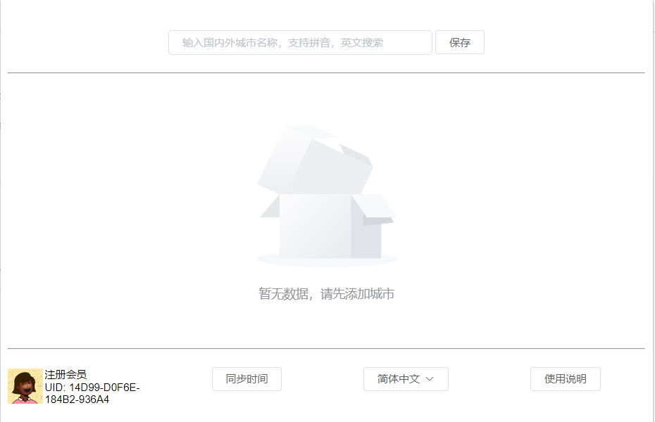
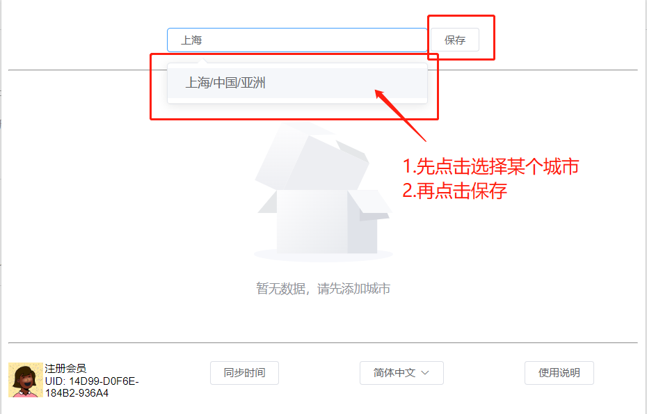
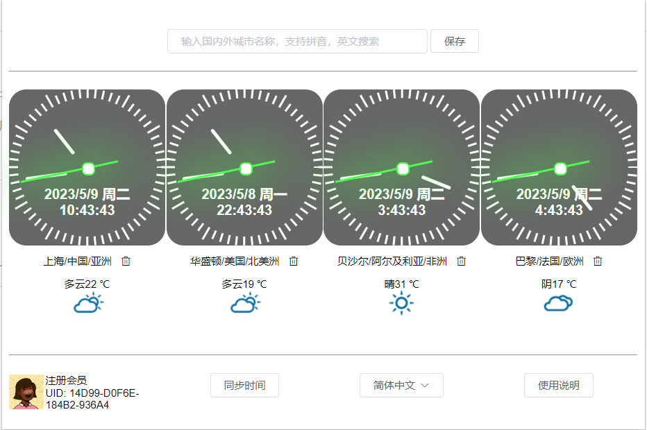

世界时间助手
世界时间助手，实时支持全世界2000+城市的当地时间，天气查询
当前插件新版本：v1.0.5【2023年5月18日】
主要功能
支持自定义是否显示数字小时
支持自定义单个/批量设置表盘的背景色，可选灰/兰,白/绿,黑/白
支持自定义时间字体大小
支持自定义日期，星期，时间的展示格式
支持自定义城市名称
支持城市列表排序，数字大的靠前
支持全世界2000+城市的当地时间查询
支持全世界2000+城市的当地天气查询
支持基于浏览器账号的用户数据同步
支持城市名称，拼音，英文的联想搜索
支持一键刷新同步数据，同步最新时间
支持删除已添加的城市
支持多语言切换，如简体中文，English
使用步骤
-
1.默认没有新添加城市，如图
2.输入搜索的城市，先在推荐的城市列表中选择某个城市，再点击保存即可，如图
3.添加成功后的城市列表时间，如图

常见问题解决方法
1. 使用一键刷新功能（推荐）
2. 重启插件或者更新插件到最新版本
3. 卸载插件再重新安装插件（可能会丢失已有数据）
4. 联系作者微信尝试解决
交流反馈
联系微信号，扫码添加时请添加备注“世界时间助手”，谢谢！
隐私协议
【世界时间助手】不会在任何情况下强行劫持访问、插入恶意代码、上传隐私信息。
【世界时间助手】不会收集和储存任何个人识别信息（不包括第三方提供的统计服务）。
【世界时间助手】上传你的自选城市列表用于多个浏览器同步（基于浏览器账户）。
【世界时间助手】会调用相关城市，天气，时间的网络开放数据。